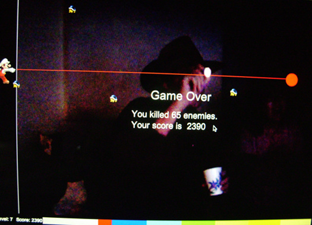

urbanSTEW :: Interactive Art Showcase at PHX:fringe
In "Shout at Mario" players use a flashlight to control the movement of the character, Mario, and make noise to control the specific action of the character.
The goal is to have the highest score. To play the game:
1. Move the flashlight UP and DOWN to control Mario.
2. Shout to fire and kill all the coming enemies.
The game has several levels. As the levels become more difficult, the enemies speed up. Consequently, the players must move the flashlight faster and shout more frequently in order to keep up.
